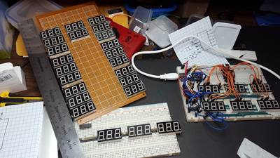

2016-10-27 - Nº 78

Editorial
Esta é a Newsletter Nº 78 que se apresenta com o mesmo formato que as anteriores. Se gostar da Newsletter partilhe-a!
Todas as Newsletters encontram-se indexadas no link.
Esta Newsletter tem os seguintes tópicos:
Hoje é o aniversário do nascimento de Dmitri Z. Garbuzov. Este inventor russo é um dos pioneiros da construção e utilização de diodos laser de onda continua à temperatura ambiente. Nas noticias da semana ficámos a saber que o gigante Qualcomm vai comprar a NXP por cerca de 47 mil milhões de dólares. Ficámos igualmente a saber que a sonda New Horizons, depois de ter percorrido cerca de 5.5 mil milhões de quilómetros, a última sequência de observação de Plutão chegou ao laboratório Johns Hopkins Applied Physics Laboratory (APL). A transmissão foi feita via a estação ligada à rede de Espaço Profundo da NASA e foi a última de mais de 50 gigabits de informação chegada de Plutão.
Na Newsletter desta semana apresentamos diversos projetos de maker assim como alguns modelos 3D que poderão ser úteis. Na rubrica "Documentação" apresentamos a MagPI Nº 51 e a revista newselectronics de 25 de Outubro.
 João Alves ([email protected])
João Alves ([email protected])
O conteúdo da Newsletter encontra-se sob a licença  Creative Commons Attribution-NonCommercial-ShareAlike 4.0 International License.
Creative Commons Attribution-NonCommercial-ShareAlike 4.0 International License.
Novidades da Semana ^
Qualcomm to Acquire NXP
"Qualcomm Incorporated and NXP Semiconductors N.V. today announced a definitive agreement, unanimously approved by the boards of directors of both companies, under which Qualcomm will acquire NXP. Pursuant to the agreement, a subsidiary of Qualcomm will commence a tender offer to acquire all of the issued and outstanding common shares of NXP for $110.00 per share in cash, representing a total enterprise value of approximately $47 billion. NXP is a leader in high-performance, mixed-signal semiconductor electronics, with innovative products and solutions and leadership positions in automotive, broad-based microcontrollers, secure identification, network processing and RF power. As a leading semiconductor solutions supplier to the automotive industry, NXP also has leading positions in automotive infotainment, networking and safety systems, with solutions designed into 14 of the top 15 infotainment customers in 2016. NXP has a broad customer base, serving more than 25,000 customers through its direct sales channel and global network of distribution channel partners. " [...]
New Horizons Returns Last Bits of 2015 Flyby Data to Earth
"Having traveled from the New Horizons spacecraft over 3.4 billion miles, or 5.5 billion kilometers (five hours, eight minutes at light speed), the final item a segment of a Pluto-Charon observation sequence taken by the Ralph/LEISA imager arrived at mission operations at the Johns Hopkins Applied Physics Laboratory (APL) in Laurel, Maryland, at 5:48 a.m. EDT on Oct. 25. The downlink came via NASAs Deep Space Network station in Canberra, Australia. It was the last of the 50-plus total gigabits of Pluto system data transmitted to Earth by New Horizons over the past 15 months." [...]
Outras Notícias
- NXP Announces MCUXpresso Software and Tools, Unifies Development Support for its Microcontroller Powerhouse Portfolio
- Samsung ARTIK Smart IoT Platform Delivers the Power of IoT Development to Businesses
- New Intel Atom Processor E3900 Series: Enabling Next Generation of Smart and Connected IoT Devices
- Microsoft releases beta of Microsoft Cognitive Toolkit for deep learning advances
- ARM accelerates secure IoT from chip to cloud
- mbed OS 5.2 now released!
Ciência e Tecnologia ^
Next-generation smartphone battery inspired by the gut
"Researchers have developed a prototype of a next-generation lithium-sulphur battery which takes its inspiration in part from the cells lining the human intestine. The batteries, if commercially developed, would have five times the energy density of the lithium-ion batteries used in smartphones and other electronics. The new design, by researchers from the University of Cambridge, overcomes one of the key technical problems hindering the commercial development of lithium-sulphur batteries, by preventing the degradation of the battery caused by the loss of material within it. The results are reported in the journal Advanced Functional Materials." [...]
Engineers design ultralow power transistors that could function for years without a battery
"A newly-developed form of transistor opens up a range of new electronic applications including wearable or implantable devices by drastically reducing the amount of power used. Devices based on this type of ultralow power transistor, developed by engineers at the University of Cambridge, could function for months or even years without a battery by 'scavenging' energy from their environment. Using a similar principle to a computer in sleep mode, the new transistor harnesses a tiny 'leakage' of electrical current, known as a near-off-state current, for its operations. This leak, like water dripping from a faulty tap, is a characteristic of all transistors, but this is the first time that it has been effectively captured and used functionally. The results, reported in the journal Science, open up new avenues for system design for the Internet of Things, in which most of the things we interact with every day are connected to the Internet." [...]
New kind of supercapacitor made without carbon
"Energy storage devices called supercapacitors have become a hot area of research, in part because they can be charged rapidly and deliver intense bursts of power. However, all supercapacitors currently use components made of carbon, which require high temperatures and harsh chemicals to produce. Now researchers at MIT and elsewhere have for the first time developed a supercapacitor that uses no conductive carbon at all, and that could potentially produce more power than existing versions of this technology." [...]
Long may you wave, borophene
"Though theyre touted as ideal for electronics, two-dimensional materials like graphene may be too flat and hard to stretch to serve in flexible, wearable devices. Wavy borophene might be better, according to Rice University scientists. The Rice lab of theoretical physicist Boris Yakobson and experimental collaborators observed examples of naturally undulating, metallic borophene, an atom-thick layer of boron, and suggested that transferring it onto an elastic surface would preserve the materials stretchability along with its useful electronic properties. Highly conductive graphene has promise for flexible electronics, Yakobson said, but it is too stiff for devices that also need to stretch, compress or even twist. But borophene deposited on a silver substrate develops nanoscale corrugations. Weakly bound to the silver, it could be moved to a flexible surface for use." [...]
Documentação ^
A documentação é parte essencial do processo de aprendizagem e a Internet além de artigos interessantes de explorar também tem alguma documentação em formato PDF interessante de ler. Todos os links aqui apresentados são para conteúdo disponibilizado livremente pelo editor do livro.
the MagPI 51
"Build a remote controlled robot: Create your very own Pi-powered rover in our latest guide; Make an underwater camera: Take a selfie with your fishy friends with our help; Master NOOBS and the configuration utility: Two more essential beginner's guides to sink your teeth into; Spooky Halloween projects: Try our abs-ghoul-utely brilliant Pi hacks; And much, much more!" [...]
newelectronics 25 Outubro 2016
"New Electronics is a fortnightly magazine focusing on technological innovation, news and the latest developments in the electronics sector. Downloadable as a digital page turner or pdf file, or offered as a hard copy, the New Electronics magazine is available in a format to suit you." [...]
Modelos 3D ^
Com a disponibilidade de ferramentas que permitem dar azo a nossa imaginação na criação de peças 3D e espaços como o thingiverse para as publicar, esta rubrica apresenta alguns modelos selecionados que poderão ser úteis.
OpenSCAD Wedge Module/Library
"This is a simple and performant library for drawing wedges with no artifacts (e.g. no clipping/mask rectangles or similar) as well as wedges greater than 180 degrees. It does this using polygon() and some hacky-but-elegant flattening and re-creating of the points array. The module accepts 4 arguments: The radius of which to draw the wedge, the starting and ending angles in degrees, and an optional parameter indicating how many fragments the wedge should have. The final parameter defaults to the number of degrees in the arc but can be overridden with $fn or whatever you like. This module concerns itself with the 2 dimensional aspect of the wedge; using linear_extrude() handles the 3rd dimension." [...]
Windup motor Car toy
"Car toy with windup motor." [...]
Calendrio Enigma
"Calendrio Enigma, conforme vc gira o disco de dia e data ele forma as iniciais do ms e o dia, olhando o restante do disco no conseguimos identificar os numeros e meses, somente quando o conjunto est sobre o campo especfico." [...]
Projetos Maker ^
Diversos Projetos interessantes.

Seven Segment Sudoku
"Giant handheld Sudoku game. Instead of using an LCD screen like any sane person would, I decided to use 81 seven segment displays! Actually, I found inexpensive three digit displays on AliExpress, so I only need to purchase 27 of them. :-) Still need to do a ton of research in how to create Sudoku puzzles of varying level of difficulties." [...]
A Simple Electronic Game
"You are learning how to make a small very funny electronic game. You can play with your friends and test your reflex." [...]
Capacitor Tester / Capacitance Meter
"If, like myself, you've got an enormous stash of unlabelled electronic components that seem to look like capacitors, it's probably a good idea to either throw them away or test them with a capacitance tester. Furthermore, there's no need to go out and buy an expensive proprietary meter as the lowly Arduino will do a very good job just by adding a few resistors and using some clever coding." [...]
Dual boot for arduino
" I would like to introduce a new dualboot feature which can be an add-on to any existing arduino boards. The additional requirement is an external i2c eeprom with minimum size of the internal flash memory." [...]
PiOSCBOX
"The PiOSCBOX project is an attempt at creating a low-cost, stand-alone effects processor and synthesizer using a small display, rotary encoders, a usb audio device and a Raspberry Pi 3. The software is written in a combination of c, python and pure data." [...]
Building a LED matrixGame console with Arduino
"Retro games are cool! The pixel games like tetris, ping-pong, snake etc., are fun to play with physical buttons instead of a touch screen. In this tutorial, we will build a Retro gaming console with super bright Red led matrices, a Joystick and a ATmega328 (with Arduino Uno bootloader. The fun part is not just building it writing/porting pixel games! So let's get started." [...]
Build Your Own Low-Resistance Meter
"You probably already have a DMM for measuring resistance, but can it be used with resistances below 1O? And if so, are those low-ohm readings reliable? This project will show you how to make your own low-resistance meter; it uses only a handful of components and can measure resistances as low as 0.1O." [...]
Arduino Sun Tracker Turret
"Follow the sun with Arduino! In this tutorial, we'll be building an Arduino based Solar Tracking Turret. Most commonly, these are used in Photovoltaic systems to maximize the surface area of sun exposure on solar panels. This is an easy build, so let's get started! " [...]
Controlling a Roomba Robot with Arduino and Android device
"As one of Instructables Robotics Contest 2016's winners, I received as a prize an iRobot Roomba Create2. It is a great and very affordable platform for robotics development, costing around US$200. Create 2 allows for a variety of programming methods. As a start, I used it with an Arduino and an Android APP to move the robot around. In this first tutorial, I will explore how to connect the Arduino with the Roomba via serial port and how to command its motors, LEDS and sound. On a future projects, I will explore its sensors and also use a Raspberry Pi to connect the Roomba with internet." [...]
HDDJ: Turning an old hard disk drive into a rotary input device
"A couple of years ago we built a fun system that would allow DJs to mix music tracks in interesting ways. Our design called for an input device that would allow the DJ to quickly seek through a track and find a specific playback position, and we wanted to be able to do this by spinning a rotary control with a flick of the wrist - much like turntable DJs can spin the record back and forth to do the same." [...]
Build a Dual Thermostat for Precise Preset Temperatures
"It's not a complicated concept. It's not even terribly difficult to implement. It's just that I really don't understand why no one produces a product like this I have a heated shop and a heated garage. I also live in a fairly cold climate. I don't want to keep my garage or shop up to working temperature if I'm not actively working, but I do want to keep them at some reasonable temperature (above freezing) in the winter. I'd like to keep these areas at something like 50-55F when unoccupied, and then heating them to 68-70F when I'm working. I have been doing this by using standard mechanical thermostats and the process of sliding the setpoint back and forth is somewhat imprecise. If only someone made a dual setpoint thermostat I tried to find one on several occasions, but had no luck. Sure, they make smart thermostats that know when you're physically in the space, thermostats that connect to your WiFi, thermostats that learn your habits, but nothing as simple as a thermostat with two set points. It looked like if someone was going to make a dual setpoint thermostat, that someone was going to have to be me." [...]
Arduino Sun Tracker Turret
"Follow the sun with Arduino! In this tutorial, we'll be building an Arduino based Solar Tracking Turret. Most commonly, these are used in Photovoltaic systems to maximize the surface area of sun exposure on solar panels. This is an easy build, so let's get started!" [...]
OV7670 Arduino Camera Sensor Module Framecapture Tutorial
"The camera module is powered from a single +3.3V power supply. An external oscillator provide the clock source for camera module XCLK pin. With proper configuration to the camera internal registers via I2C bus, then the camera supply pixel clock (PCLK) and camera data (Data[9:0]) back to the host with synchronize signal like HREF and VSYNC. The OV7670 camera module is a low cost 0.3 mega pixel CMOS color camera module, it can output 640x480 VGA resolution image at 30fps. The OV7670 camera module build in onboard LDO regulator only single 3.3V power needed and can be used in Arduino, STM32,Chipkit, ARM, DSP , FPGA and etc." [...]
IoT : Androino Doorlock
"Do you ever leave your key under doormat or other hidden place so another family member can open the door? or when you arrive at your office and realize your door hasn't been locked. what if another person open your door using the key that you leave. That's not safe. Androino Doorlock have the solution." [...]
Make Electromagnetic /magnetic Field Detector with arduino
"Hello today we are going to learn about electromagnetic / Magnetic Field Detector with Arduino . There is no reason to explain about electromagnetic field or magnetic field . so just start with component you want" [...]
DIY Remote Controlled Flamethrower
"In this Instructable I will show you how to build a flamethrower from inexpensive materials found in your local hardware store and hobby shop. With a very simple frame made from 15x15 square wood, brass tubing as the exhaust pipe and a powerful servo to activate the butane flask, makes this device very reliable due to minimal number of parts. The servo and igniton source is then controlled by a controller powered from a small battery, and a receiver bound to a transmitter your inputs will control the device from a distance up to 1 kilometer!" [...]
Talking Clock with Arduino
"For a time I tried to build a Talking Clock (see the video), but with not good results due the voice module I was using for that. After many searches related to appropriated hardware and also learn how to use the appropriated libraries, I achieved my goals. I will present you my version of Talking Clock using Arduino with the module DFPlayer_Mini to play MP3/WAV files. There are many reasons to go further with this project !" [...]
Program 8051 with Arduino
"This guide provides a complete solution to program the AT89S51 or AT89S52 (these are what I have tested) with an Arduino." [...]
How to add parallel flash memory to Arduino
"Battery profiler - my recent Arduino project - needed to store large amounts of data in some kind of flash memory controlled by Arduino. In the past, for this I used serial (SPI) chip W25Q80BV from Winbond that came in a breadboard-friendly PDIP-8 package. See this excellent tutorial on how this was done and reasons why this might be preferred from an SD card. The chip is no longer available, though, and while looking for alternatives I flirted for a time with parallel flash memory. Parallel memory? At first, this seems like a hopeless mismatch with Arduino. Parallel logic chips, after all, feature a lot of pins that need to be connected, well, in parallel. For example, the chip I used, SST39SF010A, has 32 (!) PDIP pins. Address pins alone count to 17! There is no way pin-poor Arduino, such as Pro Mini, could handle this kind of load. However, with a few additional chips I could successfully serialize the memory chip using as little as 6 Arduino pins plus I2C pins for communication." [...]
Motion Detection Lights
"i wanted to make cheap motion sensor lights that work from a standard 220V socket. This is the best that I could achieve, for now)" [...]
Home Guarduino - IoT Connected Security System
"PROBLEM: We moved into a new house a couple of years ago, and it already had a security system installed. Problem was that nobody knew the password! The previous owners never used it, and the manufacturer had gone out of business. Despite extensive internet searches, and even consulting a security expert, the system remained a 'brick on the wall'. SOLUTION: A perfect opportunity for DIY. I wanted to use the use the already installed wired PIR motion sensors and smoke detectors, I wanted the Main Panel and Keypad to be 'drop in replacements' for the existing units, and I also wanted to add some extra features like card access and internet connectivity." [...]
DIY Soil Moisture Monitor with Arduino and a Nokia 5110 Display
"In this Instructable we are going to see how to build a very useful Soil Moisture Monitor with a big Nokia 5110 LCD display using Arduino. Easily measure the moisture levels of your plant's soil from your Arduino and build interesting devices with this project! Building a soil moisture monitor is a great learning experience. When you finish building this project you will have a better understanding of how the soil moisture sensor works, you will know how to wire a Nokia 5110 lcd display and you are going to see in action how powerful the Arduino platform can be. With this project as a base and the experience gained, you will be able to easily build more complex projects in the future." [...]
Mini Stereo Amplifier
" In this Instructables i will show you how to build a MINI STEREO AMPLIFIER from a cheap parts. The cost is under 5 $ !!. This amplifier is mini size, so you can place this in your pocket, wallet, or bag. This amplifier is portable, so you can use this anywhere, anytime or even anyplace. You just connect the speaker to this amplifier and Voila!, the sound is powerfull!!" [...]
Arudino Harpsi-Gourd
"Build your own Harpsi-Gourd to play just like Lurch of the Addams Family, trading the over-rated touch sensitive banana for the season appropriate Pumpkins, that generate musical notes. This Harpsi-Gourd was built to be exhibited at our local "How-to Halloween" expo. The size of the actual panel was designed to fit onto a piano's keyboard with the lid closed. The Music Shield used has a built in audio amplifier which eliminates the need for external amplifier. The provided Arduino sketch plays assigned MIDI notes for each Pumpkin. When left idle for greater than 60 seconds the sketch will begin to pluck off random notes at random intervals. When the keyboard is left idle for only 5 seconds the MIDI processor is changed between the 127 different instruments. This allows a Maestro to play continuously on the same instrument, uninterrupted. but still allows for the diversity of the music shield to be experienced. Additionally, if a key is continuously depressed it will randomly change the color of that LED." [...]
Recover bricked attiny using arduino as high voltage programmer
"Hi! Today I'll explain you how to recover your bricked ATtiny microcontroller using your Arduino board. ATtinys are very popular due to their small form factor yet very powerful. While working with them you may accidentally brick the ATtiny. As arduino is extremely popular and really easy to use, I guess you have one or more lying on your work table. You don't need to purchase a HVP (High Voltage Programmer), or search for an old PC with parallel port to recover ATtiny. Just build a small circuit, plug it into Arduino board, upload a sketch and you are good to go. So let's start." [...]
Hyduino - Automated Hydroponics with an Arduino
"So, you may be wondering...WHAT IS HYDROPONICS? Basically, hydroponics is growing plants without the use of a traditional dirt medium by using a nutrient rich water solution. Those mediums used to "plant" in range from fiberglass to sand and from fired clay balls to nothing at all. Several branches of hydroponics include aeroponics, aquaponics, etc. But WHY would I want to take all this extra time and effort to grow my plants in this "special water"? Well, hydroponically grown foods not only taste better and are more nutritional, you can change the properties of your food, monitor what goes into your food and pollute less. You can also grow more in less space. This is especially great for those people that that have limited areas in their backyard to grow in. With the right plant selection, you can also keep pests away; a citronella plant has oils that keep away mosquitoes and other pests. Now if this wasn't enough for you to jump right in to hydroponics, listen to this: hydroponics uses 70 to 90 percent LESS water than conventional growing does." [...]
Warping Infinity Mirror
"An infinity mirror is part of an upcoming build of mine. There are lots of great descriptions of how to make these on the site already, and I checked a lot of them out - especially Ben Finio's excellent and encouraging Arduino-powered version. However, I was keen to leverage my novice skills with Fusion360 (the first solid 3D modeling program I've used) and 3D printed the enclosure for a flexible string (rather than a strip) of LEDs. I was very happy with the look of the final product - the diffusers made it easy on the eye, it had an interesting exposed look to the wiring, and I liked how the back of each LED case glowed. The first one I made was 6" in diameter and had 25 LEDs: this one is 9" in diameter and has 50 LEDs (the entirety of one string). If you've never made an infinity mirror because it looks too complex, but would like to and you have access to a 3D printer, try this one. It doesn't use much resin (and needs no support material) and no significant making/computing/programming/wiring skills are required. It also has a neat interactive twist: a handle on the front allows you to warp the mirror, creating neat wormhole effects." [...]

eDOT - Arduino Based Precision Clock and Weather Station
"eDOT is an Arduino based precision clock and weather station with built in IR remote receiver and automatic brightness adjustment. The device has been designed to be easily expanded with additional hardware like WIFI module or other. Thanks to its six 8x8 dot matrix LED display can be used to show many type of information coming either from internal sensor, custom scrolling messages or wireless from the internet (RSS, etc). It has a very low power consumption, a simple and elegant design that combines glass front face and 3D printed parts for the body." [...]
ESP8266: GPS Location web server with Google Maps
"ESP8266 modules are great low cost stand alone controllers with built in Wi-Fi, and I already made a number of Tutorials about them. I also made some Tutorials on using Serial GPS modules. In this Tutorial I will show you how you can make a GPS Web Server using Google Map to show the position of the GPS Module with ESP8266 and Serial GPS . You will be able to connect to it on your existing Wi-Fi network from multiple devices with a web browser, and always see where your module is." [...]
That's all Folks!